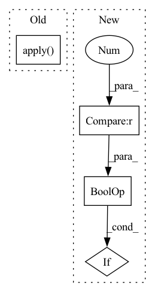

Pattern ID :4625

Before Change
inference_cuda_module.residual_add_bias_fp32
def forward(self, input, residual, residual_norm, bias):
return DeepSpeedMLPFunction.apply(input,
residual,
residual_norm,
bias,
self.inter_w,
self.inter_b,
self.attn_nw,
self.attn_nb,
self.config,
self.mp_group,
self.output_b,
self.output_w,
self.q_scales,
self.q_groups,
self.merge_count,
self.mlp_gemm_func,
self.fused_gemm_gelu,
self.vector_matmul_func,
self.bias_residual_func,
self.residual_add_func)
After Change
add_bias=bias is not None,
residual_add=residual_add)
if self.mp_group is not None and dist.get_world_size(group=self.mp_group) > 1:
dist.all_reduce(residual, group=self.mp_group)
return residual
In pattern: SUPERPATTERN
Frequency: 4
Non-data size: 4
Instances
Fragment ID: 16661604
Project Name: microsoft/deepspeed
Commit Name: c702b64c94243674c3143a4cf29d59777a88307d
Time: 2023-01-09
Author: jerasley@microsoft.com
File Name: deepspeed/ops/transformer/inference/ds_mlp.py
M Class Name: DeepSpeedMLP
N Class Name: DeepSpeedMLP
M Method Name: forward(5)
N Method Name: forward(5)
M Parent Class: nn.Module
N Parent Class: nn.Module
M File Name: deepspeed/ops/transformer/inference/ds_mlp.py
N File Name: deepspeed/ops/transformer/inference/ds_mlp.py
M Start Line: 159
M End Line: 178
N Start Line: 67
N End Line: 94
'>
Before Change
proj_in_dim = in_dim + hidden_dim
self.feat_out = nn.Linear(proj_in_dim, out_dim * reduction_factor, bias=False)
self.apply(decoder_init)
def _zero_state(self, hs):
init_hs = hs.new_zeros(hs.size(0), self.lstm[0].hidden_size)
return init_hs
After Change
proj_in_dim = in_dim + hidden_dim
self.feat_out = nn.Linear(proj_in_dim, out_dim * reduction_factor, bias=False)
if reduction_factor > 1 and downsample_by_conv:
self.conv_downsample = nn.Conv1d(
in_dim,
in_dim,
'>
Fragment ID: 16661605
Project Name: r9y9/nnsvs
Commit Name: 6b106af7dad6253702fe0f13fcf445f892d9b3b9
Time: 2022-10-15
Author: zryuichi@gmail.com
File Name: nnsvs/tacotron/decoder.py
M Class Name: NonAttentiveDecoder
N Class Name: NonAttentiveDecoder
M Method Name: __init__(14)
N Method Name: __init__(10)
M Parent Class: BaseModel
N Parent Class: BaseModel
M File Name: nnsvs/tacotron/decoder.py
N File Name: nnsvs/tacotron/decoder.py
M Start Line: 115
M End Line: 128
N Start Line: 118
N End Line: 165
'>
Before Change
else:
return m
self.apply(add_sn)
def forward(self, image_batch):
image_batch = image_batch.to(module_device(self))
features = self.encoder(image_batch)
After Change
)
for module in self.modules():
if (
isinstance(module, (nn.Conv2d, nn.ConvTranspose2d))
and len(module._forward_pre_hooks) == 0
):
torch.nn.utils.spectral_norm(module)
def forward(self, image_batch):
'>
Fragment ID: 16661602
Project Name: aiwizo/template-nvae
Commit Name: 28cd1b1de1501c4c33856588294e278378568efe
Time: 2020-09-03
Author: samedii@gmail.com
File Name: vae/architecture/model.py
M Class Name: Model
N Class Name: Model
M Method Name: __init__(2)
N Method Name: __init__(2)
M Parent Class: nn.Module
N Parent Class: nn.Module
M File Name: vae/architecture/model.py
N File Name: vae/architecture/model.py
M Start Line: 13
M End Line: 33
N Start Line: 13
N End Line: 33
'>
Before Change
norm_w=None,
norm_b=None,
alibi=None):
output = DeepSpeedSelfAttentionFunction.apply(
input,
input_mask,
head_mask,
layer_past,
get_present,
encoder_hidden_states,
encoder_attention_mask,
output_attentions,
norm_w,
norm_b,
self.config,
self.attn_qkvw,
self.attn_qkvb,
self.num_attention_heads_per_partition,
self.norm_factor,
self.hidden_size_per_partition,
self.attn_ow,
self.attn_ob,
self.mp_group,
self.q_scales,
self.q_groups,
self.merge_count,
self.qkv_merging,
self.score_context_func,
alibi)
return output
After Change
inp_norm = qkv_out[-1]
if self.config.mlp_after_attn and self.mp_group is not None and dist.get_world_size(
group=self.mp_group) > 1:
dist.all_reduce(output, group=self.mp_group)
return (output, key_layer, value_layer, context_layer, inp_norm)
'>
Fragment ID: 16661603
Project Name: microsoft/deepspeed
Commit Name: bb68c526ad2c267dfb235db9c0d0fb1413d19a34
Time: 2022-12-22
Author: jerasley@microsoft.com
File Name: deepspeed/ops/transformer/inference/ds_attention.py
M Class Name: DeepSpeedSelfAttention
N Class Name: DeepSpeedSelfAttention
M Method Name: forward(12)
N Method Name: forward(12)
M Parent Class: nn.Module
N Parent Class: nn.Module
M File Name: deepspeed/ops/transformer/inference/ds_attention.py
N File Name: deepspeed/ops/transformer/inference/ds_attention.py
M Start Line: 458
M End Line: 485
N Start Line: 120
N End Line: 151